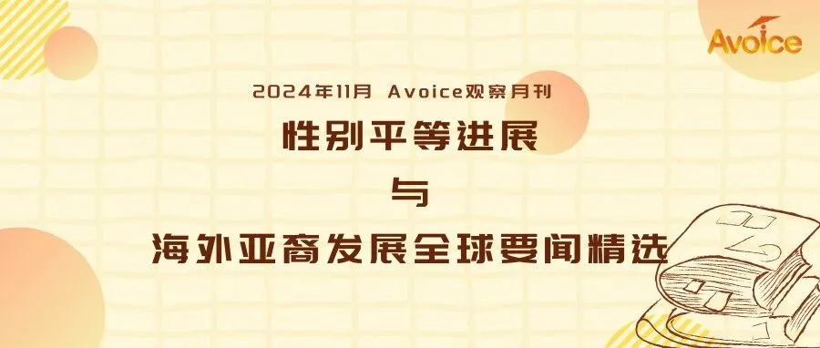
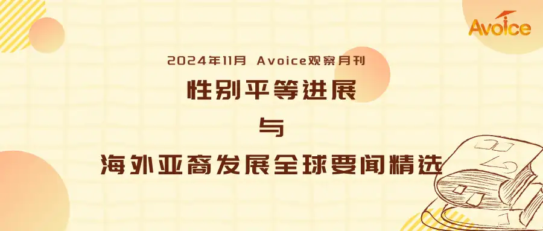

专栏引言：
十一月，性别平等与亚裔群体的话题在多方面成为焦点。从性别暴力，女性地位到法律挑战，全球范围内的性别平等进展备受关注。同时，针对亚裔的暴力事件频发，内华达州和南非的案件再次引发了社会对亚裔群体安全的担忧。此外，亚裔在文化、政治和社会中的地位不断提升，崭露头角。休斯顿华裔女性芮久玟获得杰出贡献奖，Andy Kim成为新泽西州首位
亚裔参议员，以及Hulu的热门剧集《Interior Chinatown》皆为亚裔群体注入了积极的声音。这些事件展现了当今社会变革的复杂性和亚裔群体在各领域日益重要的地位。
目录
Table of Contents
一、性别平等
News on Gender Equality
全球女性家暴致死率数据概况与制止暴力侵害妇女行为国际日
英国最高法院审理关于“女性”定义的里程碑式法律挑战
二、针对亚裔的暴力
Crime against Asian Community
内华达州华裔女性失联案件
南非华人店主绑架事件
科罗拉多州亚裔家庭入室盗窃案激增
三、亚裔话语权
Voice of Asian
从幕后走向聚光灯
休斯顿市审计长为华裔社区发展总监芮久玟颁发杰出贡献奖
Andy Kim成为新泽西州首位亚裔参议员
01
性别平等
News
全球女性家暴致死率数据概况与制止暴力侵害妇女行为国际日
根据联合国毒品和犯罪问题办公室（UNODC）和联合国妇女署（UN Women）于2024年发布的《2023年亲密伴侣及家庭成员女性致死率全球估算》报告显示，2023年全球约有51,100名女性因亲密伴侣或家庭成员的暴力行为而失去生命。这一数字表明，2023年全球所有女性被谋杀的案例中，约有60%是由TA们的亲密伴侣或其TA家庭成员实施的。亲密伴侣或家庭成员的暴力行为仍然是全球女性致死的主要原因之一。2024年11月25日是“制止暴力侵害妇女行为国际日”。数据显示，每10分钟就有一名女性因性别暴力而被杀害。联合国妇女署特别强调，需要通过立法和社会支持等多方面的努力，保护女性免受暴力侵害，并为幸存者提供更好的支持服务。
相关链接：
One woman or girl is killed every 10 minutes by their intimate partner or family member. (2024, November 25). UN Women. Retrieved November 30, 2024, from
https://www.unwomen.org/en/news-stories/press-release/2024/11/one-woman-or-girl-is-k
News
英国最高法院审理关于“女性”定义的里程碑式法律挑战
2024年11月26日，英国最高法院开始审理一项关于“女性”定义的法律挑战案件，这起长期争议由女性权益团体“为了苏格兰的女性”（FWS）对苏格兰政府提起。此案件的核心在于，拥有性别认同证书的跨性别者是否可以在平等法下被视为女性。
案件涉及苏格兰法律对“女性”定义的重新解释，该法律旨在确保苏格兰公共机构的董事会中至少有50%的女性代表，其中包括拥有性别认同证书的跨性别女性。FWS对此提出了异议，认为这样的定义超越了议会的权限，并希望推翻这一定义。
此次案件的判决预计将在未来产生，其结果可能对全英范围内的性别权利和定义产生深远影响。
相关链接：
Sim, P. (2024, November 27). Supreme Court hearing case on definition of a woman.
BBC. https://www.bbc.com/news/articles/ckgv8v5ge37o
02
针对亚裔的暴力
News
内华达州华裔女性失联案件
2024年11月26日，美国媒体报道，内华达州的一位华裔女性张女士自11月8日起失联。警方介入后，在张女士丈夫住所的后院发现了TA的遗体。警方前往调查其丈夫丹尼尔时，丹尼尔表示妻子“独自打车离家出走”，这种说法引起了警方的怀疑。警方随后在与丹尼尔相关的住所进行了搜查，最终在法伦住所的后院挖出了张女士的遗体。目前，71岁的丹尼尔已被警方以一级谋杀罪拘捕。
相关链接：
郑和号. (2024, November 27). 郑和号：2024年11月27日海外安全风险日报 [Zheng
He: Overseas Security Risk Daily - November 27, 2024]. 观风闻. Retrieved November 30, 2024, from https://user.guancha.cn/main/content?id=1339082
News
南非华人店主绑架事件
2024年11月18日消息，近日南非一名47岁华人店主遭遇三名男子绑架，至今音讯全无。据报道，这名华人在打开位于戈万·姆贝基大道的店铺大门准备营业时，一伙突如其来的绑匪将TA推进一辆白色福特汽车后迅速逃离现场。几小时后，这辆嫌疑车辆被发现弃置在新布莱顿区，车内却空无一人。当地警方目前已立案调查，并呼吁知情人士拨打犯罪举报热线提供线索。
相关链接：
郑和号. (2024, November 19). 郑和号：2024年11月19日海外安全风险日报 [Zheng
He: Overseas Security Risk Daily - November 19, 2024]. 观风闻. Retrieved November 30, 2024, from https://user.guancha.cn/main/content?id=1334921
News
科罗拉多州亚裔家庭入室盗窃案激增
2024年11月，科罗拉多州的多个亚裔家庭遭遇了一系列精心策划的入室盗窃，警方警告称这些案件可能与一个名为“南美盗窃集团”的全国性犯罪团伙有关。道格拉斯县警长办公室表示，这些窃贼已从不同亚裔商户的家中偷走了近百万美元的现金和奢侈品。这些盗窃案件主要针对亚裔家庭，尤其是新移民和亚裔商户，TA们往往将大量资产存放在家中，而不是银行。当地警官称这是一个“全国性趋势”，并表示许多犯罪团伙已经注意到这种情况，并开始针对亚裔家庭实施盗窃。
相关链接：
McCormack, C. (2024, November 3). Sophisticated South American burglary ring targets Asian households in alarming 'epidemic': Colorado police . New York Post. Retrieved November 30, 2024, from
https://nypost.com/2024/11/03/us-news/colorado-burglary-ring-targets-asian-homes-in-theft-epid
News
从幕后走向聚光灯
2024年11月，Hulu推出了全新动作喜剧剧集《Interior Chinatown》，改编自Charles Yu的同名小说，由Jimmy O. Yang和Chloe Bennet主演。该剧讲述了主人公Willis Wu（由Jimmy O. Yang 饰演）作为一个被困在警匪剧背景中的角色，如何突破角色局限并进入聚光灯下的故事。制作团队和主演希望通过这种“剧中剧”的形式探索亚裔美国人在美国电视产业中的经历。该剧旨在通过喜剧和警匪剧的结合，展现亚裔美国人在文化和身份认同上的复杂性。
相关链接：
Becker, A. (2024, November 18). 'Interior Chinatown': Jimmy O. Yang breaks out of the background and into the spotlight. ABC7NEWS. Retrieved November 30, 2024, from https://abc7news.com/post/interior-chinatown-jimmy-yang-breaks-background-spotlight/15556698/
News
休斯顿市审计长为华裔社区发展总监芮久玟颁发杰出贡献奖
2024年11月13日，休斯顿市审计长克里斯托弗·G·霍林斯宣布授予华裔社区发展总监芮久玟“杰出贡献奖”，以表彰TA在工作中展现的卓越领导力和为社区发展所做出的突出贡献。这一奖项不仅体现了对芮久玟职业成就的认可，也彰显了TA，作为一个亚裔，对休斯顿市多元社区建设的重要影响力。芮久玟在获奖感言中表示：“这个奖项不仅属于我个人，更属于整个团队和所有为社区发展付出努力的人。”
相关链接：
泉, 深. (2024, November 22). 休斯顿市审计长为华裔社区发展总监芮久玟颁发杰
出贡献奖 [The Comptroller of the City of Houston presented the Outstanding Contribution
Award to Chinese Community Development Director Coco Reggie]. 美南新闻. Retrieved
November 30, 2024, from https://scdaily.com/zh-CN/post/72834
News
Andy Kim成为新泽西州首位亚裔参议
2024年11月，美国新泽西州的参议员选举中，民主党人Andy Kim击败了共和党候选人Curtis Bashaw，成功赢得了前参议员Bob Menendez空缺的席位，成为新泽西州历史上首位亚裔参议员。这场胜利被视为是新泽西州亚裔群体崛起的象征，也反映出亚裔美国人在美国政治中的影响力正在不断扩大。Kim呼吁更多的亚裔美国人参与公共服务，TA表示：“不要自己把自己排除在外。如果你想参选，想为社会服务，那就尝试一下。我希望大家能听到这个呼声。” TA还提到，希望能够通过自己的行动改变人们对亚裔参政的看法，并展示出亚裔群体同样有权代表州内的所有居民。
相关链接：
Yam, K. (2024, November 5). Andy Kim ushers in a 'new era' as N.J.'s first Asian American senator. NBC News. Retrieved November 29, 2024, from https://www.nbcnews.com/news/asian-america/andy-kim-new-jersey-first-asian-american-senato r-rcna176913
* 注：本文所收录的信息仅用于分享交流，不代表Avoice的立场和观点
撰稿｜学术研究处
排版/封面｜游舸